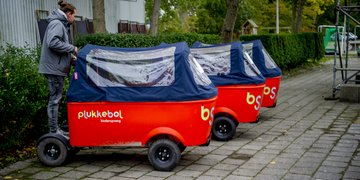
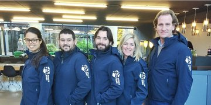
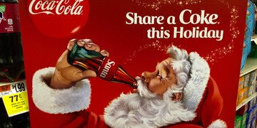

Deze startup brouwt speciaalbier van je oude kerstboom
vrijdag, 28 december, 2018 - 12:40
In de categorie cray cray: deze ondernemers toveren
je oude kerstboom om tot een IPA-biertje. We kunnen allemaal meedoen aan
dit merkwaardige experiment.
> Lees verder

Deze 7 bekende merken verdwenen in 2018
donderdag, 27 december, 2018 - 10:20
Is je merk de ene dag nog gemeengoed, de dag erop kan
het een schim uit het verleden zijn. Deze zeven bekende merken wisten 2018 niet te...
De 5 meest voorkomende fouten in een privacyverklaring
donderdag, 27 december, 2018 - 09:08
De Autoriteit Persoonsgegevens heeft aangegeven
binnenkort strenger te controleren op het naleven van de AVG. Reden genoeg dus om je...

KPMG stapt in robotadviseur; Fonds gaat voedselverspilling helpen halveren
donderdag, 27 december, 2018 - 07:17
Ondernemersnieuws: challenger AdviceRobo haalt KPMG binnen
, corporates komen met fonds dat voedselverspilling moet halveren en Frits van...

5 ondernemerslessen van de kerstman
maandag, 24 december, 2018 - 12:41
De kerstman: hij oogt zo onschuldig, maar achter die baard
gaat een op hypergrowth beluste raskapitalist schuil. Door sluw om...
5 tips om de grens over te gaan
Zo groot wordt Thuisbezorgd na de overname van Delivery Hero in Duitsland
Goede voornemens werken niet. Met deze 7 stappen ga je naar goede gewoonten
Startup Owlin strikt grote kredietbeoordelaar Fitch als 'ultieme marktvalidatie'
1 van 588 ouder >